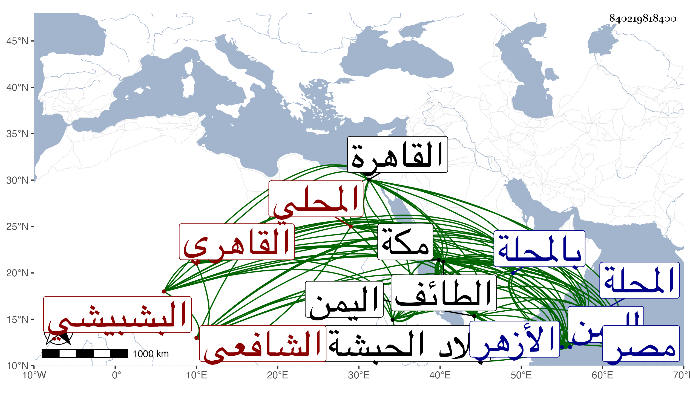

0902Sakhawi.DawLamic.ITO20230111-ara1.EIS1600.840219818400
Biography ID: 840219818400
327
محمد بن عبيد بن محمد بن سليمان بن أحمد الشمس البشبيشي بكسر الموحدتين ومعجمتين قرية بالقرب من المحلة ثم المحلي ثم القاهري الشافعي نزيل مكة ويعرف بالبشبيشي . ولد تقريبا سنة سبع وثلاثين وثمانمائة ببشبيش ونشأ بها فقرأ بها بعض القرآن ثم أكمله بالمحلة وحفظ كتاب أبي شجاع والملحة عند ابن كتيلة والشاطبية وجود بعض القرآن عند الشهاب بن جليدة ونور الدين ابن الكريوني وغيرهما وتحول لمصر فنزل الأزهر وتلا به القرآن لأبي عمرو على إمامه وحضر دروس الشنشي والعبادي وقرأ على زكريا وموسى البرمكيني والبدر حسن الضرير وغيرهم بل أخذ عن العلم البلقيني ولازمه في دروسه ومواعيده وغيرها وعن قاسم وابن تقي الدين وأبي السعادات وغيرهم من البلاقنة وغيرهم كالمناوي وتلميذه الفخر المقسي ، وسمع على الشاوي والكمال بن أبي شريف والخيضري في آخرين كعبد الرحمن الخليلي وابن حامد وتلا على عبد الله بن عيسى الكردي الضرير لحمزة ولغالب السبع إفرادا وعلى الزين جعفر والجلال المرجوشي ، وارتحل لمكة فجاور في سنة ثمان وخمسين ، وتلا القرآن غير مرة على عمر الحموي النجار وبعضه على علي الديروطي والشريف الطباطبي وشهاب الدين القباقبي وكان حج في تلك السنة وآخرين كالشيخ عمر المرشدي وحضر دروس الشوائطي وسمع على النجم عمر بن فهد ثم قطن مكة من سنة إحدى وستين ، وسافر منها بعد السبعين إلى اليمن ثم بعد الثمانين إلى الحبشة وقرأ هناك الحديث وكذا سافر لحيلة والطائف ونحوهما كعدن وجملة كل ذلك بسبب الاسترزاق بالقراءة ، وهو إنسان خير متودد مفيد محب في الفائدة راغب في كتابتها مع تقنع وتعفف واتقان لقراءة البخاري وكثير من أوجهه ، وهو ممن لازمني بالقاهرة ثم بمكة وقرأ على غالب البخاري وغيره من تصانيفي وسمع علي ومني الكثير وعلق عني فوائد ، وتكرر دخوله لليمن وهو على طريقته ونمطه في التقنع وكثرة التودد .
